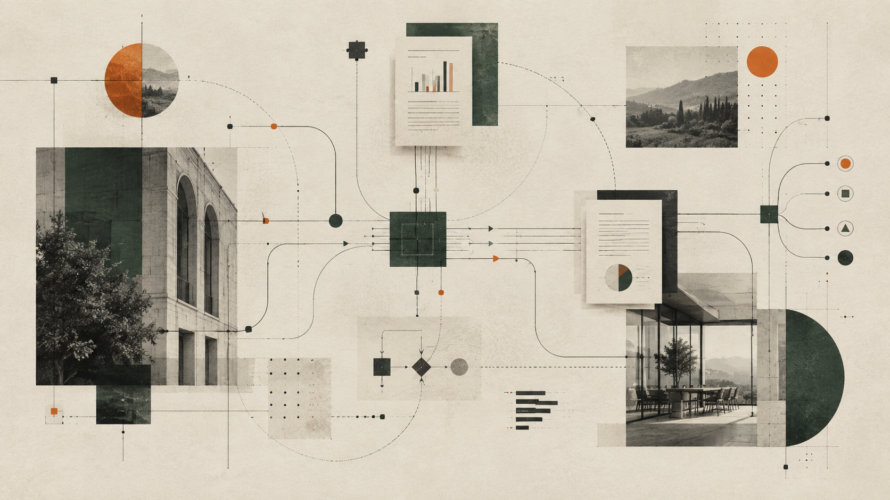

Startup
Incubatore, bandi e grant, angel e VC, team, professionisti, spazio. Se arrivi da fuori, anche sede, visti e base operativa in Sardegna.
Offerta startup →Cagliari · dal 2009
Ecosistema per startup e imprese: spazio, capitali, persone, progetti con l’industria, radici in Sardegna.

Due pubblici
Incubatore, bandi e grant, angel e VC, team, professionisti, spazio. Se arrivi da fuori, anche sede, visti e base operativa in Sardegna.
Offerta startup →Open innovation, connessioni, talent, academy, consulenza AI, onshoring. Partiamo dal blocco: persone, processo, tecnologia o territorio.
Offerta aziende →Open innovation
Con BIOS facciamo matching tra startup, PMI e partner industriali fino al proof of concept. Stesso mestiere su altri verticali.
BIOS e open innovation →BIOS: Eni-Joule, Fondazione di Sardegna, Innois, BF Educational. Operato da Zest e The Net Value. Bioeconomia, biomateriali, chimica verde, agritech, waste.
Desk, uffici, sale, eventi e indirizzo operativo in Viale La Plaia 15.
Spazi →Formazione collegata a mestieri reali, per persone e team aziendali.
Corsi →Cultura digitale, startup, community e location per aziende.
Calendario →Radicare un’impresa qui: sede, casa, visti, bandi e persone.
Onshoring →